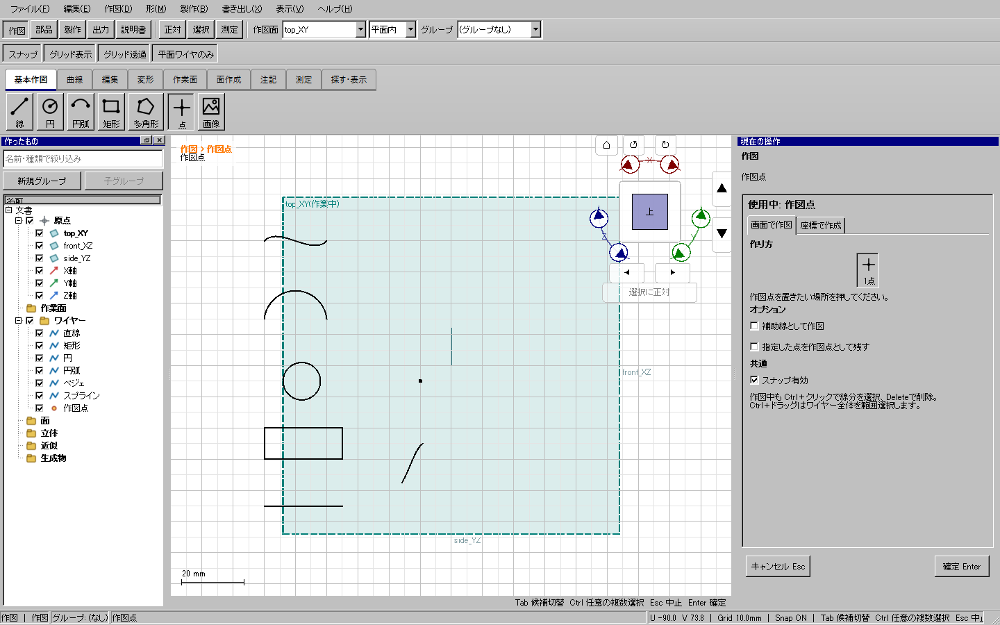
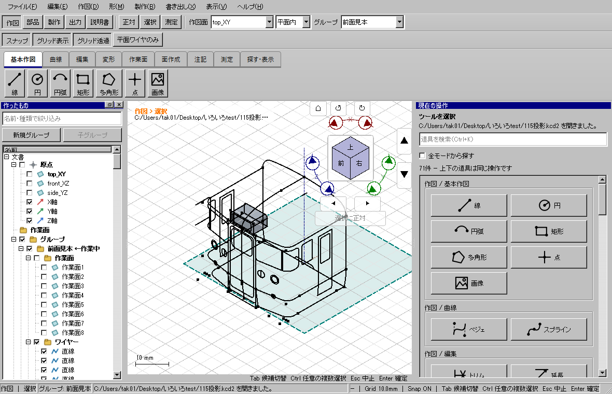

WP-08、製品候補 fb143d73c。
完了：Windows全体195試験、skip 0、開発版/配布版UI各582件、旧self-test成功。CTest実時間1484.52秒。115投影.kcd2の通常デスクトップ起動・表示・描画も成功。最終検証の要約。配布先：out/releases/plane-wire-drawing-release-20261024/package/kachakacha_cad_next.exe。
マウス・カーソル数値からの作図は、場面を作り直さず新しい線や点を追加する。平面ワイヤ表示の許可一覧は場面の置換時に更新していたため、増分追加された線が文書と左一覧に存在していても、3D表示・選択・スナップから除外されていた。座標入力など、場面を再構築する経路では起きにくい違いがあった。
作図確定後の選択整理を行う入口で、平面の表示判定を先に更新するようにした。表示ボタンをオフ/オンしたり、作図面を選び直す操作は不要。判定は既存の幾何条件・許容差を使う。コアAPI、保存形式、ワイヤーの形・精度、グループや個別の非表示状態は変更していない。フィルターが無効な通常表示では更新処理をすぐに抜ける。

カーソル数値12.5mm、連続直線、Enterで確定する折れ線、補助線・残す指定点・制御多角形も確認。オフセット/傾斜平面では表示だけでなく新規端点へのスナップと選択を確認した。面外形状は引き続き除外し、3D作図で面外の線を追加しても平面フィルターを無視して表示しない。
Delete→Undo→Redo、個別非表示、フィルター切替、保存再読込後の続きの作図も確認。座標入力の面外テストは、平面作図では入力拒否、3D作図へ切り替えた後は作成されるが平面表示では隠れるという既存の仕様を区別した。
重点試験初版の面外ケースは、平面作図のまま面外線の作成を期待して失敗した。平面外入力拒否を明示確認し、3D作図へ切り替える実操作を加えた。失敗記録もout内へ保全。幾何条件や許容差を緩めて試験を通していない。
「平面ワイヤのみ」は現在の作図面に全体が載るワイヤー・点の表示フィルターであり、面外の線を平面へ投影する機能ではない。明示的に非表示の要素やグループも、この修正で勝手に表示しない。
